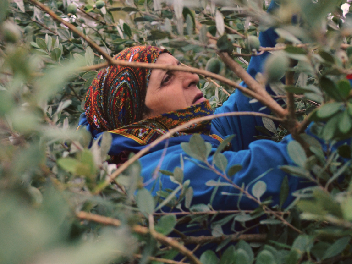
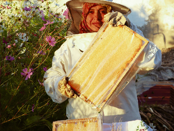
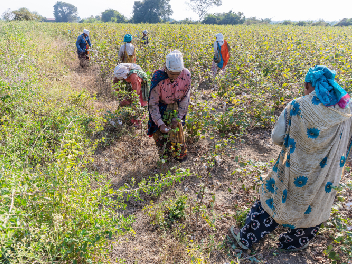

Qui sommes-nous ?
Créée en 2015 dans la région de Nador, la coopérative Thimdrine réunit 25 femmes qui récoltent, transforment et conditionnent elles-mêmes leurs produits.
Nos ruches sont installées dans les collines de thym sauvage du Rif, nos oliviers poussent sur les terrasses familiales et nos figues de barbarie sont cueillies à la main chaque été.

Nos valeurs

Des produits naturels sélectionnés avec soin.

25 femmes unies pour valoriser le terroir du Rif.
DE NOS TERRES À VOTRE TABLE
NOTRE SAVOIR-FAIRE

Des matières premières
soigneusement sélectionnées
dans le terroir
du Rif.